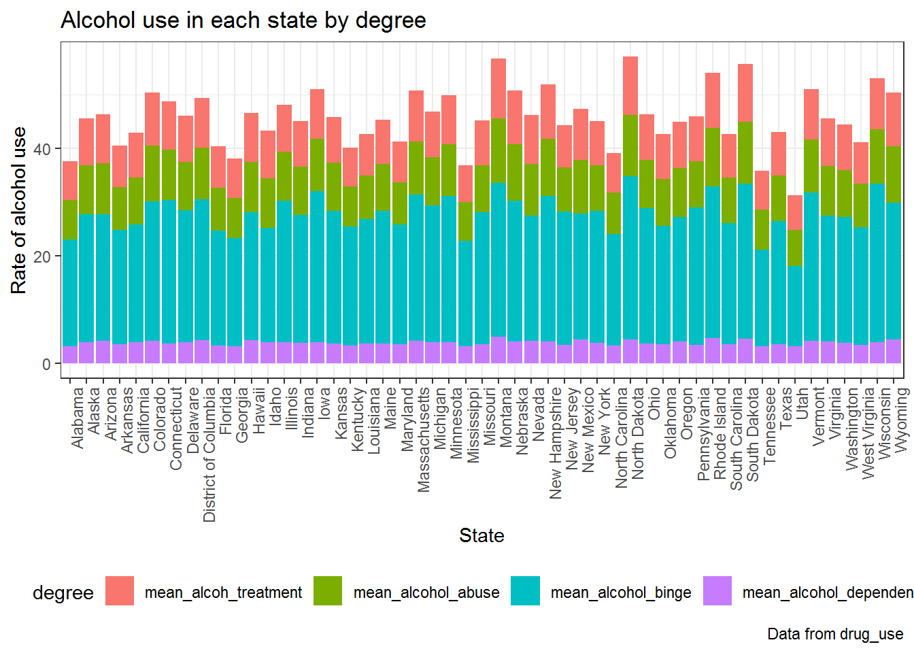
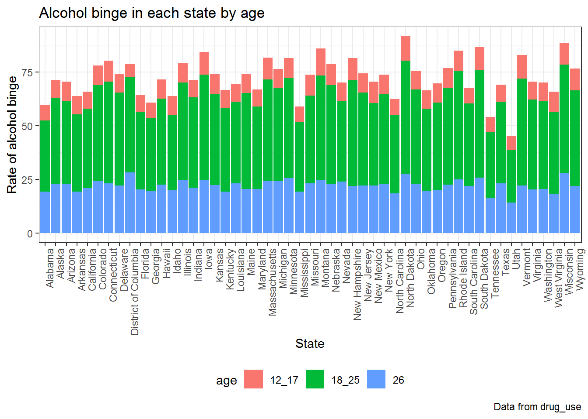

drug_raw =
read_csv("./data/drugs.csv") %>%
janitor::clean_names()## Parsed with column specification:
## cols(
## .default = col_integer(),
## `Rates.Alcohol.Abuse Past Year.12-17` = col_double(),
## `Rates.Alcohol.Abuse Past Year.18-25` = col_double(),
## `Rates.Alcohol.Abuse Past Year.26+` = col_double(),
## `Rates.Alcohol.Binge Past Month.12-17` = col_double(),
## `Rates.Alcohol.Binge Past Month.18-25` = col_double(),
## `Rates.Alcohol.Binge Past Month.26+` = col_double(),
## `Rates.Alcohol.Dependence Past Year.12-17` = col_double(),
## `Rates.Alcohol.Dependence Past Year.18-25` = col_double(),
## `Rates.Alcohol.Dependence Past Year.26+` = col_double(),
## `Rates.Alcohol.In Minors.Abuse` = col_double(),
## `Rates.Alcohol.In Minors.Use` = col_double(),
## `Rates.Alcohol.Need Treatment Past Year.12-17` = col_double(),
## `Rates.Alcohol.Need Treatment Past Year.18-25` = col_double(),
## `Rates.Alcohol.Need Treatment Past Year.26+` = col_double(),
## `Rates.Alcohol.Perceptions of Risk.12-17` = col_double(),
## `Rates.Alcohol.Perceptions of Risk.18-25` = col_double(),
## `Rates.Alcohol.Perceptions of Risk.26+` = col_double(),
## `Rates.Alcohol.Use Past Month.12-17` = col_double(),
## `Rates.Alcohol.Use Past Month.18-25` = col_double(),
## `Rates.Alcohol.Use Past Month.26+` = col_double()
## # ... with 43 more columns
## )## See spec(...) for full column specifications.drug_data =
drug_raw %>%
select(year, state,
rates_alcohol_abuse_past_year_12_17:rates_alcohol_dependence_past_year_26,
rates_alcohol_need_treatment_past_year_12_17:rates_illicit_drugs_abuse_past_month_26,
rates_illicit_drugs_cocaine_used_past_year_12_17:rates_illicit_drugs_need_treatment_past_year_26,
rates_marijuana_new_users_12_17:rates_marijuana_used_past_month_26) %>%
gather(key, value, -state, -year) %>%
mutate(key = str_replace_all(key, c("year_" = "year:", "month_" = "month:", "risk_" = "risk:", "users_" = "users:"))) %>%
separate(key, into = c("rate", "age"), sep = ":", extra = "merge") %>%
mutate(rate = str_replace(rate, "^rates_", "")) %>%
spread(rate, value)
population_data =
drug_raw %>%
select(x12_17, x18_25:x26, year, state) %>%
gather(key = "age", value = "popul_in_thousands", -state, -year) %>%
mutate(age = str_replace(age, "x", ""))
drug_clean = left_join(drug_data, population_data)## Joining, by = c("year", "state", "age")*Alcohol use by state
drug_clean %>%
group_by(state) %>%
summarize(mean_alcohol_abuse = mean(alcohol_abuse_past_year),
mean_alcohol_binge = mean(alcohol_binge_past_month),
mean_alcohol_dependence = mean(alcohol_dependence_past_year),
mean_alcoh_treatment = mean(alcohol_need_treatment_past_year)) %>%
gather(key = "degree", value = "rate", -state) %>%
ggplot(aes(x = state, y = rate)) +
geom_bar(aes(fill = degree), stat = "identity") +
theme_bw() +
theme(axis.text.x = element_text(angle = 90, hjust = 1)) +
labs(
title = "Alcohol use in each state by degree",
x = "State",
y = "Rate of alcohol use",
caption = "Data from drug_use"
) +
theme(legend.position = "bottom")
drug_clean %>%
group_by(state, age) %>%
summarize(mean_alcohol_abuse = mean(alcohol_abuse_past_year),
mean_alcohol_binge = mean(alcohol_binge_past_month),
mean_alcohol_dependence = mean(alcohol_dependence_past_year),
mean_alcoh_treatment = mean(alcohol_need_treatment_past_year),
mean_alcohol_use = mean(alcohol_use_past_month)) %>%
ggplot(aes(x = state, y = mean_alcohol_abuse)) +
geom_bar(aes(fill = age), stat = "identity") +
theme_bw() +
theme(axis.text.x = element_text(angle = 90, hjust = 1)) +
labs(
title = "Alcohol abuse in each state by age",
x = "State",
y = "Rate of alcohol abuse",
caption = "Data from drug_use"
) +
theme(legend.position = "bottom")drug_clean %>%
group_by(state, age) %>%
summarize(mean_alcohol_binge = mean(alcohol_binge_past_month)) %>%
ggplot(aes(x = state, y = mean_alcohol_binge)) +
geom_bar(aes(fill = age), stat = "identity") +
theme_bw() +
theme(axis.text.x = element_text(angle = 90, hjust = 1)) +
labs(
title = "Alcohol binge in each state by age",
x = "State",
y = "Rate of alcohol binge",
caption = "Data from drug_use"
) +
theme(legend.position = "bottom")
drug_clean %>%
group_by(state, age) %>%
summarize(mean_alcohol_dependence = mean(alcohol_dependence_past_year)) %>%
ggplot(aes(x = state, y = mean_alcohol_dependence)) +
geom_bar(aes(fill = age), stat = "identity") +
theme_bw() +
theme(axis.text.x = element_text(angle = 90, hjust = 1)) +
labs(
title = "Alcohol dependence in each state by age",
x = "State",
y = "Rate of alcohol dependence",
caption = "Data from drug_use"
) +
theme(legend.position = "bottom")drug_clean %>%
group_by(state, age) %>%
summarize(mean_alcoh_treatment = mean(alcohol_need_treatment_past_year)) %>%
ggplot(aes(x = state, y = mean_alcoh_treatment)) +
geom_bar(aes(fill = age), stat = "identity") +
theme_bw() +
theme(axis.text.x = element_text(angle = 90, hjust = 1)) +
labs(
title = "Alcohol use need treatment in each state by age",
x = "State",
y = "Rate of alcohol use need treatment",
caption = "Data from drug_use"
) +
theme(legend.position = "bottom")drug_clean %>%
group_by(year) %>%
summarize(mean_alcohol_abuse = mean(alcohol_abuse_past_year),
mean_alcohol_binge = mean(alcohol_binge_past_month),
mean_alcohol_dependence = mean(alcohol_dependence_past_year),
mean_alcoh_treatment = mean(alcohol_need_treatment_past_year)) %>%
gather(key = "degree", value = "rate", -year) %>%
ggplot(aes(x = year, y = rate)) +
geom_line(aes(color = degree)) +
theme_bw() +
labs(
title = "Alcohol use through years by degree",
x = "Year",
y = "Rate of alcohol use",
caption = "Data from drug_use"
) +
theme(legend.position = "bottom") +
scale_x_continuous(breaks = c(2002, 2006, 2010, 2014))Cocaine
drug_clean %>%
select(year, contains("illicit")) %>%
group_by(year) %>%
summarize(mean_cocaine_use = mean(illicit_drugs_cocaine_used_past_year),
mean_illicit_abuse = mean(illicit_drugs_abuse_past_month),
mean_illicit_dependence = mean(illicit_drugs_dependence_past_year),
mean_illicit_treatment = mean(illicit_drugs_need_treatment_past_year)) %>%
gather(key = "degree", value = "rate", -year) %>%
ggplot(aes(x = year, y = rate)) +
geom_line(aes(color = degree)) +
theme_bw() +
labs(
title = "Illicit drug use through years by degree",
x = "Year",
y = "Rate of illicit drug use",
caption = "Data from drug_use"
) +
theme(legend.position = "bottom") +
scale_x_continuous(breaks = c(2002, 2006, 2010, 2014))#fit_cocaine = fitted(loess(drug_cocaine$mean_past_year_cocaine ~ drug_cocaine$year))
#drug_cocaine %>%
#plot_ly(x = ~year, y = ~mean_past_year_cocaine, type = "bar", showlegend = FALSE, marker = list(color = ~year, showscale = FALSE)) %>%
#add_lines(y = fit_cocaine, showlegend = FALSE, color = 'black')drug_clean %>%
select(year, state, age, contains("cocaine")) %>%
group_by(state) %>%
summarize(
mean_past_year_cocaine_state = mean(illicit_drugs_cocaine_used_past_year)) %>%
mutate(state = fct_reorder(state, mean_past_year_cocaine_state)) %>%
plot_ly(x = ~state, y = ~mean_past_year_cocaine_state, type = "bar", showlegend = FALSE, marker = list(color = ~state, showscale = FALSE))drug_clean %>%
group_by(state) %>%
summarize(mean_cocaine_use = mean(illicit_drugs_cocaine_used_past_year),
mean_illicit_abuse = mean(illicit_drugs_abuse_past_month),
mean_illicit_dependence = mean(illicit_drugs_dependence_past_year),
mean_illicit_treatment = mean(illicit_drugs_need_treatment_past_year)) %>%
gather(key = "degree", value = "rate", -state) %>%
ggplot(aes(x = state, y = rate)) +
geom_bar(aes(fill = degree), stat = "identity") +
theme_bw() +
theme(axis.text.x = element_text(angle = 90, hjust = 1)) +
labs(
title = "Illicit drug use in each state by degree",
x = "State",
y = "Rate of illicit drug use",
caption = "Data from drug_use"
) +
theme(legend.position = "bottom")